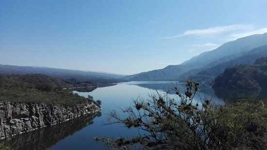
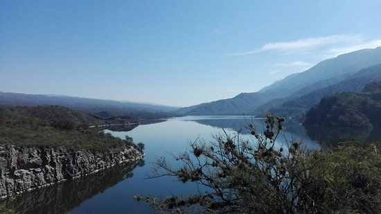
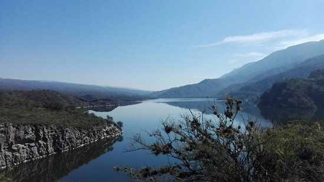

Dique Las Pirquitas
Un espejo de agua rodeado de serranías, perfecto para la pesca deportiva y el camping tranquilo.
 

- Camping
- Alquiler de botes
- Áreas de pícnic
Valle Viejo: Naturaleza, Historia y Tecnología
Un paso montañoso lleno de historia y belleza natural. Ideal para aventureros y amantes del paisaje.
Un espejo de agua rodeado de serranías, perfecto para la pesca deportiva y el camping tranquilo.

Un espacio natural único en Valle Viejo, donde la vegetación exuberante y las palmeras crean un ambiente paradisíaco. Ideal para relajarse y conectar con la naturaleza.
Un espacio emblemático que rinde homenaje a las culturas originarias de la región. Ideal para disfrutar de momentos de esparcimiento y conexión con la historia local.